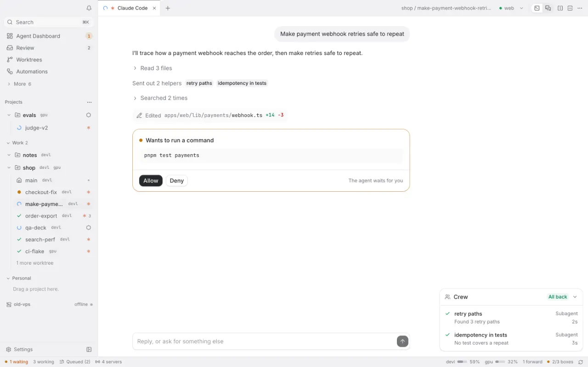
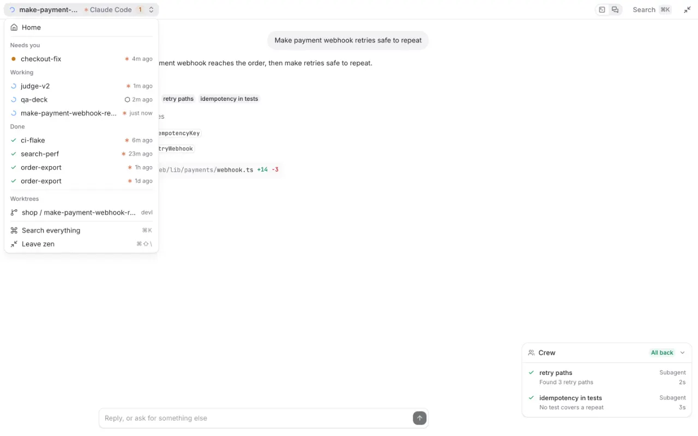

Agents that keep working when your laptop sleeps.
Berth runs Claude Code, Codex and other coding agents on your own dev boxes. Work with them from your laptop; close it, and they keep going.
curl -fsSL https://berthd.app/install | sh
For Apple silicon and Intel Macs, signed and notarized. Open source. How to get started
Start
One box for the work.
Say what to do, pick the box, the project and a new worktree, and the agent. Pick two agents, or one model against another, and they each try it in their own worktree while a judge ranks them.

Follow
Read along, answer in a click.
Each agent shows as a calm conversation: what it said, the files it read, its edits, the helpers it sent out. When it asks, the question is a button. The terminal is one switch away.

Keep track
Every agent on every box, by what it needs.
Needs you, working, done and ready. Answer from the card, reply, or open the session; finished work waits in Review.

Zen
Only the agents.
One keystroke puts the sidebar and the rest away. A small switcher lists who needs you first, then who's working, and takes you to any agent or worktree.

Try it in your browser.
The live demo is the real app on invented boxes and repositories. Nothing runs, and nothing leaves the page.